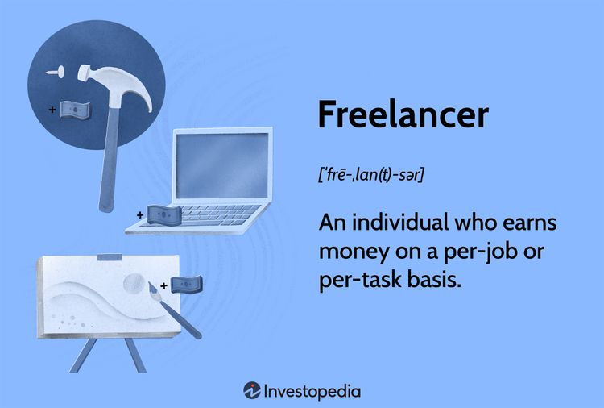

How to become a successful freelancer
Turning your skills into a service is the first step to becoming a freelancer. To do this, you’ll need to understand how your skills can help a prospective client. Try to put yourself in the shoes of your ideal client. What problems do they have, and how can your skills be used to resolve the issue?
To ensure a successful start as a freelancer, your first project should closely match your work experience and capabilities. When you find a project that you’re confident that you can provide excellent service for, it’s time to submit a proposal. The right proposal can mean the difference between securing a job or not, so it’s critical to have a proposal that works for you.
Finding target audience
Now that you have a freelance service to offer, you’ll need to find a target audience. Start by identifying the type of clients that will be a good fit for your service. Do these clients have a shared problem and common characteristics? Are they in a specific industry? As a new freelancer, merely being great at what you do is not enough to automatically have clients seeking you out. It’s crucial to position yourself in front of your potential clients so they can learn about your services
Developing a pricing structure
Once you have clearly defined your service and your target market, it’s time to set your price. The goal is to maximize the amount you’re paid without losing out on potential jobs. So, start by looking at your competitors in the market. What are they charging for similar freelancing services? In reality, there is no perfect formula for pricing your freelancer services.
